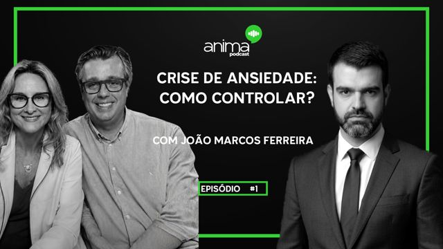
#1Ajustar
Crise de ansiedade: como controlar?
com João Marcos Ferreira
topo 180 · cabeça 355 · rosto x1549 · chega à base: sim
- altura do convidado (topo 180 vs 137 do modelo, Δ-43)
- título encosta/invade o convidado (45 linhas)
| Ep | Título | Convidado | YouTube | Thumb atual |
|---|---|---|---|---|
| #121 | O Frei que toca almas através da música | Frei Gilson | youtu.be/uVMNcNU_lMA |  |
| #123 | Podcast dos Homens: casamento, paternidade, família e saúde | (vários convidados) | youtu.be/BU3TzGp989E |  |
| #285 | A entrevista que a mídia não quer que você veja! | Berthaldo e convidados | youtu.be/eL1mR5kQ_RY |  |
| #291 | Deus tem um plano de vida para você! | Pedro Siqueira | youtu.be/Dr2QbOlAhnM |  |
| #319 | Fé, família, escola e trabalho: o método do Grupo Hirota | Francisco Hirota | youtu.be/WQeHcBRb-H0 |  |
| #321 | In Rio, domestic abusers will be forced to wear pink ankle monitors | Fred Pacheco | youtu.be/EDbNwDW-JQc |  |

com João Marcos Ferreira
topo 180 · cabeça 355 · rosto x1549 · chega à base: sim
com Ana Beatriz Barbosa
topo 177 · cabeça 333 · rosto x1560 · chega à base: sim
com Talita Melo
topo 190 · cabeça 341 · rosto x1561 · chega à base: sim
com Alex Rocha
topo 198 · cabeça 363 · rosto x1554 · chega à base: sim
com João Lucas
topo 188 · cabeça 344 · rosto x1554 · chega à base: sim
com Tuane Villela
topo 197 · cabeça 310 · rosto x1536 · chega à base: sim
com Natasha Ganem
topo 186 · cabeça 278 · rosto x1530 · chega à base: sim
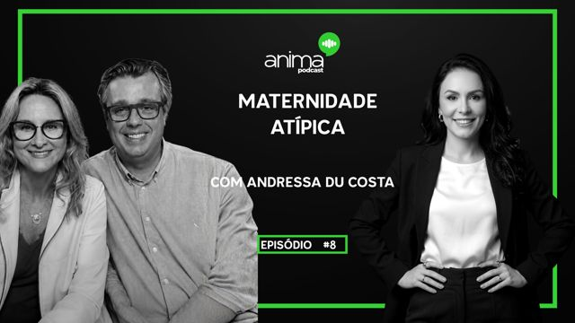
com Andressa Du Costa
topo 202 · cabeça 239 · rosto x1521 · chega à base: sim
com Camila Nardi
topo 177 · cabeça 265 · rosto x1544 · chega à base: sim
com Elizangila Leite
topo 176 · cabeça 425 · rosto x1555 · chega à base: sim
com Olzeni Ribeiro
topo 177 · cabeça 319 · rosto x1552 · chega à base: sim
com Mariana Vilas Boas
topo 179 · cabeça 329 · rosto x1555 · chega à base: sim
com Tamiris Rachid
topo 182 · cabeça 291 · rosto x1552 · chega à base: sim
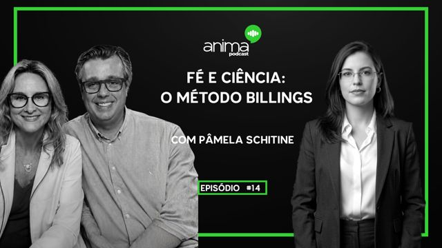
com Pâmela Schitine
topo 177 · cabeça 334 · rosto x1567 · chega à base: sim
com Flávia Nascimento
topo 179 · cabeça 319 · rosto x1552 · chega à base: sim
com Bruno Farnetano
topo 182 · cabeça 390 · rosto x1559 · chega à base: sim
com Diogo Viana
topo 187 · cabeça 372 · rosto x1553 · chega à base: sim
com Cris Alberti
topo 183 · cabeça 304 · rosto x1555 · chega à base: sim
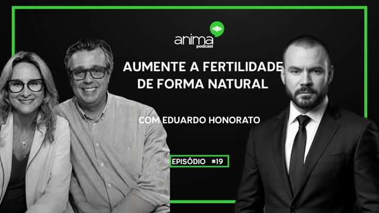
com Eduardo Honorato
topo 192 · cabeça 349 · rosto x1562 · chega à base: sim
com Bianca Quevedo
topo 190 · cabeça 319 · rosto x1540 · chega à base: sim
com Michelle Paixão
topo 180 · cabeça 302 · rosto x1543 · chega à base: sim
com Priscila Antunes
topo 178 · cabeça 255 · rosto x1557 · chega à base: sim
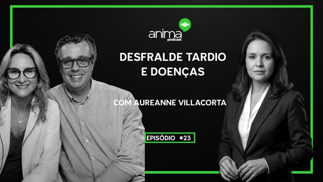
com Aureanne Villacorta
topo 177 · cabeça 349 · rosto x1564 · chega à base: sim
com Filipe Duarte
topo 202 · cabeça 354 · rosto x1555 · chega à base: sim
com Anderson Brito
topo 189 · cabeça 372 · rosto x1554 · chega à base: sim
com Roberta Rigueira
topo 183 · cabeça 302 · rosto x1560 · chega à base: sim
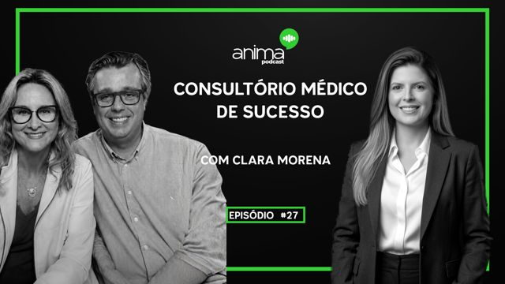
com Clara Morena
topo 177 · cabeça 339 · rosto x1561 · chega à base: sim
com Leonardo Jacobsen
topo 176 · cabeça 428 · rosto x1555 · chega à base: sim
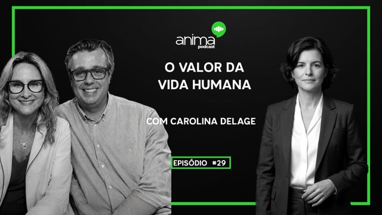
com Carolina Delage
topo 184 · cabeça 319 · rosto x1572 · chega à base: sim
com Felipe Magalhães
topo 181 · cabeça 296 · rosto x1557 · chega à base: sim
com Caroline Brandão
topo 181 · cabeça 525 · rosto x1545 · chega à base: sim
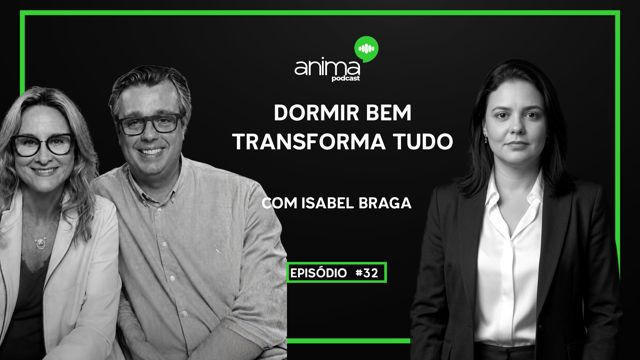
com Isabel Braga
topo 193 · cabeça 322 · rosto x1547 · chega à base: sim
com Rodrigo Reis
topo 186 · cabeça 399 · rosto x1554 · chega à base: sim
com Marcelo Masruha
topo 182 · cabeça 319 · rosto x1554 · chega à base: sim
com Leonardo Fontana
topo 176 · cabeça 241 · rosto x1555 · chega à base: sim
com Renato Azambuja
topo 189 · cabeça 397 · rosto x1555 · chega à base: sim
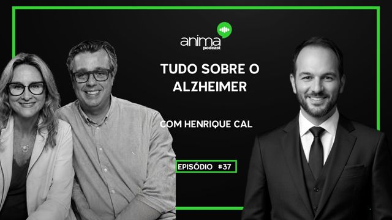
com Henrique Cal
topo 182 · cabeça 329 · rosto x1554 · chega à base: sim
com Ana Carolina Goulart
topo 197 · cabeça 558 · rosto x1560 · chega à base: sim
com Dario Leitão
topo 177 · cabeça 380 · rosto x1553 · chega à base: sim
com Carol Barros
topo 180 · cabeça 274 · rosto x1550 · chega à base: sim
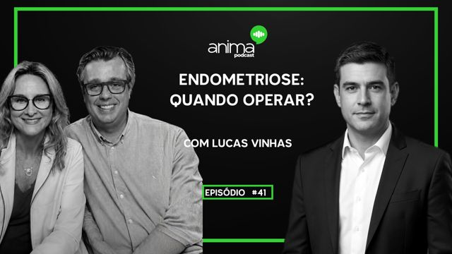
com Lucas Vinhas
topo 177 · cabeça 304 · rosto x1556 · chega à base: sim
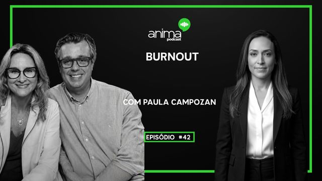
com Paula Campozan
topo 179 · cabeça 558 · rosto x1562 · chega à base: NÃO
com Carina Brandão
topo 192 · cabeça 280 · rosto x1545 · chega à base: sim
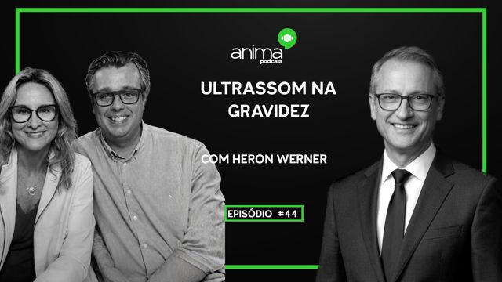
com Heron Werner
topo 175 · cabeça 438 · rosto x1554 · chega à base: sim
com Henrique Lima
topo 179 · cabeça 354 · rosto x1553 · chega à base: sim
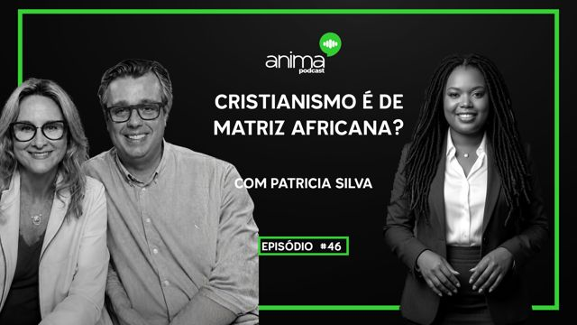
com Patricia Silva
topo 178 · cabeça 324 · rosto x1551 · chega à base: sim
com Pietra Bertolazzi
topo 177 · cabeça 316 · rosto x1554 · chega à base: sim
com Prof. Eduardo Faria
topo 178 · cabeça 476 · rosto x1556 · chega à base: sim
com Joaquim Carvalho Pedra
topo 189 · cabeça 414 · rosto x1558 · chega à base: sim
com Mariana Brito
topo 201 · cabeça 284 · rosto x1541 · chega à base: sim
com Márcio Gualberto
topo 177 · cabeça 432 · rosto x1555 · chega à base: sim
com Arno Alcântara
topo 180 · cabeça 417 · rosto x1554 · chega à base: sim
com Eliana Ribeiro
topo 179 · cabeça 464 · rosto x1548 · chega à base: NÃO
com Dom Tiago Stanislaw
topo 176 · cabeça 384 · rosto x1555 · chega à base: sim
com Chris Tonietto
topo 188 · cabeça 331 · rosto x1554 · chega à base: sim
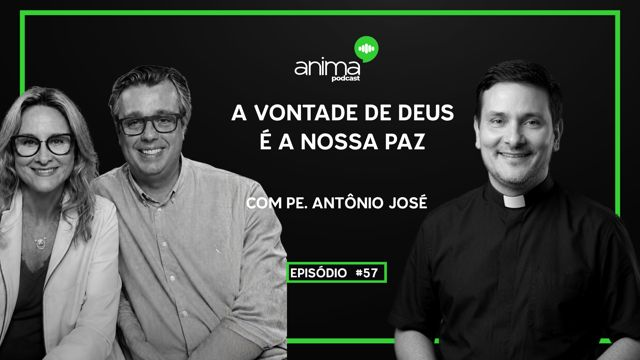
com Pe. Antônio José
topo 179 · cabeça 387 · rosto x1554 · chega à base: sim
com Pe. Heitor de Menezes
topo 178 · cabeça 424 · rosto x1554 · chega à base: sim
com Prof. Paulo Velasco
topo 179 · cabeça 384 · rosto x1554 · chega à base: sim
com Raphael Tonon
topo 178 · cabeça 347 · rosto x1554 · chega à base: sim
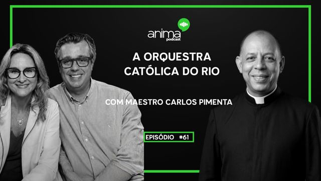
com Maestro Carlos Pimenta
topo 177 · cabeça 412 · rosto x1557 · chega à base: sim
com Diácono Romulo Canuto
topo 180 · cabeça 450 · rosto x1554 · chega à base: sim
com Padre Julinho
topo 201 · cabeça 380 · rosto x1554 · chega à base: sim
com Simone Marquetto
topo 195 · cabeça 302 · rosto x1553 · chega à base: sim
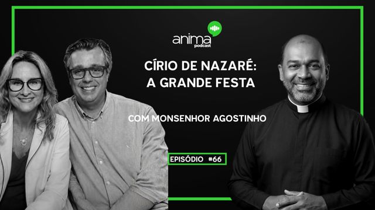
com Monsenhor Agostinho
topo 177 · cabeça 346 · rosto x1555 · chega à base: sim
com Dom Fernando Rifan
topo 176 · cabeça 446 · rosto x1554 · chega à base: sim
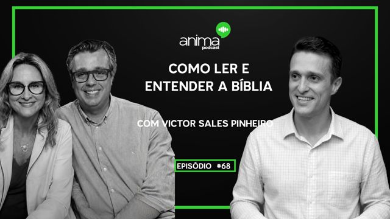
com Victor Sales Pinheiro
topo 179 · cabeça 341 · rosto x1553 · chega à base: sim
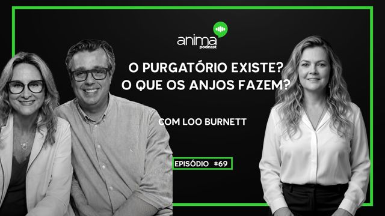
com Loo Burnett
topo 177 · cabeça 470 · rosto x1561 · chega à base: sim
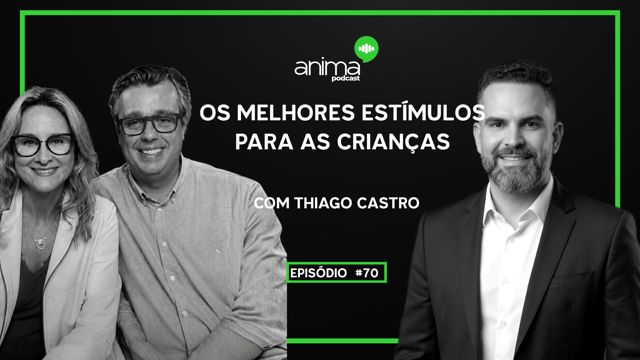
com Thiago Castro
topo 180 · cabeça 389 · rosto x1554 · chega à base: sim
com Lygia Pimentel
topo 184 · cabeça 300 · rosto x1535 · chega à base: sim
com Georgia Dorigon
topo 182 · cabeça 319 · rosto x1532 · chega à base: sim
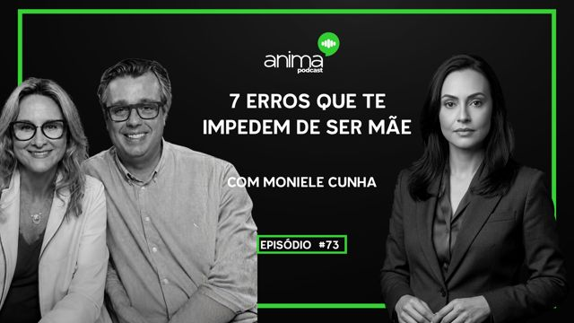
com Moniele Cunha
topo 182 · cabeça 316 · rosto x1535 · chega à base: sim
com Renata Fróes
topo 187 · cabeça 317 · rosto x1528 · chega à base: sim
com João Paulo Lomelino
topo 183 · cabeça 386 · rosto x1559 · chega à base: sim
com João Malheiro
topo 178 · cabeça 378 · rosto x1555 · chega à base: sim
com Carolina Scarabucci
topo 178 · cabeça 558 · rosto x1541 · chega à base: sim
com Paula Pratti
topo 178 · cabeça 319 · rosto x1558 · chega à base: sim
com Thiago Andrade
topo 177 · cabeça 379 · rosto x1559 · chega à base: sim
com Flavia Verocai
topo 177 · cabeça 328 · rosto x1556 · chega à base: sim
com Gleison Guimarães
topo 183 · cabeça 390 · rosto x1555 · chega à base: sim
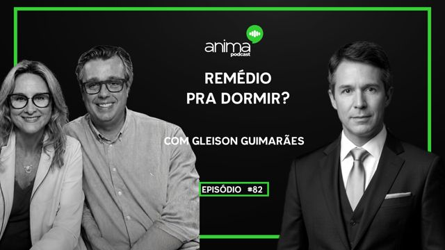
com Gleison Guimarães
topo 178 · cabeça 405 · rosto x1552 · chega à base: sim
com Carolina Meireles
topo 186 · cabeça 320 · rosto x1558 · chega à base: sim
com Ana Luisa Rego Macedo
topo 183 · cabeça 279 · rosto x1535 · chega à base: sim
com Miguel Ceccarelli
topo 180 · cabeça 319 · rosto x1518 · chega à base: sim
com Paulo Luzio
topo 179 · cabeça 388 · rosto x1553 · chega à base: sim
com Luis Trocado
topo 178 · cabeça 383 · rosto x1554 · chega à base: sim
com Larissa Abreu
topo 194 · cabeça 310 · rosto x1551 · chega à base: sim
com Tielle Machado
topo 178 · cabeça 319 · rosto x1549 · chega à base: sim
com Larissa Botelho
topo 184 · cabeça 319 · rosto x1557 · chega à base: sim
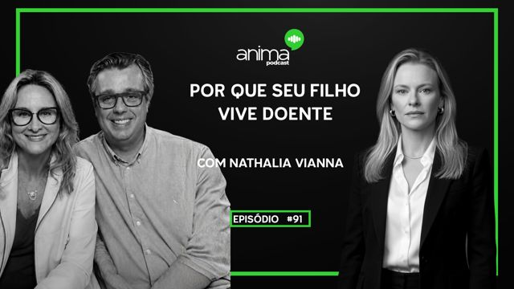
com Nathalia Vianna
topo 177 · cabeça 495 · rosto x1554 · chega à base: NÃO
com Mariana de Oliveira
topo 190 · cabeça 340 · rosto x1557 · chega à base: sim
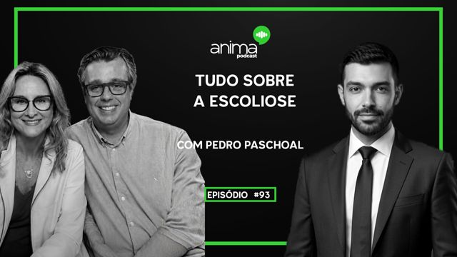
com Pedro Paschoal
topo 188 · cabeça 371 · rosto x1555 · chega à base: sim
com Juliana Neves
topo 177 · cabeça 319 · rosto x1597 · chega à base: sim
com Marcela Nardi
topo 176 · cabeça 318 · rosto x1547 · chega à base: NÃO
com Casal Plástica
topo 186 · cabeça 310 · rosto x1546 · chega à base: sim
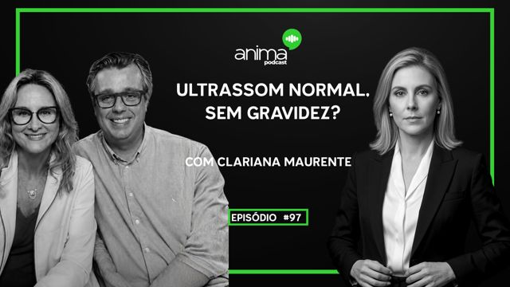
com Clariana Maurente
topo 177 · cabeça 480 · rosto x1555 · chega à base: sim
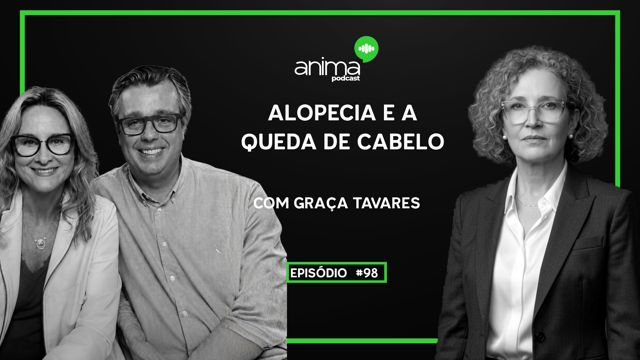
com Graça Tavares
topo 134 · cabeça 360 · rosto x1619 · chega à base: sim
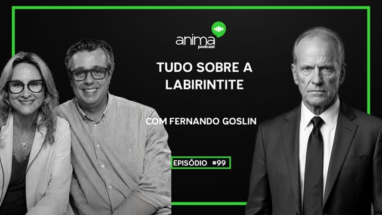
com Fernando Goslin
topo 132 · cabeça 402 · rosto x1601 · chega à base: sim
com Andrea Melo
topo 134 · cabeça 272 · rosto x1595 · chega à base: sim
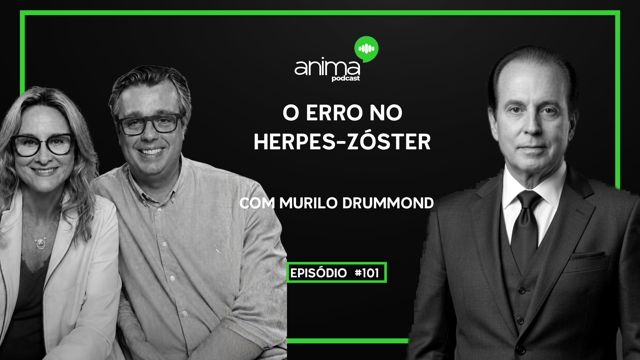
com Murilo Drummond
topo 144 · cabeça 298 · rosto x1599 · chega à base: sim
com André Vaz
topo 131 · cabeça 308 · rosto x1593 · chega à base: sim
com Mariana Francoti
topo 135 · cabeça 381 · rosto x1597 · chega à base: sim
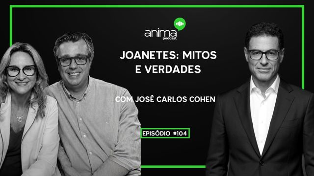
com José Carlos Cohen
topo 136 · cabeça 309 · rosto x1611 · chega à base: sim
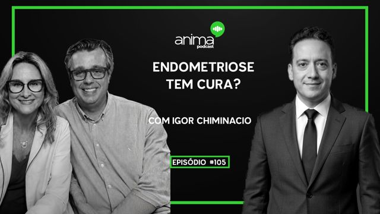
com Igor Chiminacio
topo 134 · cabeça 339 · rosto x1577 · chega à base: sim
com Luiz Sola
topo 133 · cabeça 308 · rosto x1591 · chega à base: sim
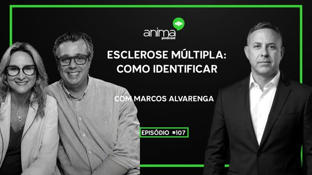
com Marcos Alvarenga
topo 137 · cabeça 267 · rosto x1626 · chega à base: sim
com Leandro Ventura
topo 142 · cabeça 335 · rosto x1602 · chega à base: sim
com Sylvia Campos
topo 183 · cabeça 340 · rosto x1557 · chega à base: sim
com Andréia Batista
topo 178 · cabeça 319 · rosto x1558 · chega à base: sim
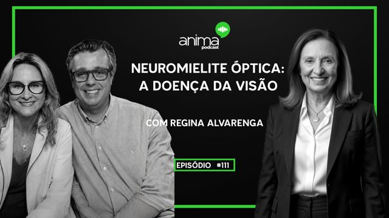
com Regina Alvarenga
topo 138 · cabeça 319 · rosto x1605 · chega à base: sim
com Samia Marsili
topo 178 · cabeça 275 · rosto x1544 · chega à base: sim
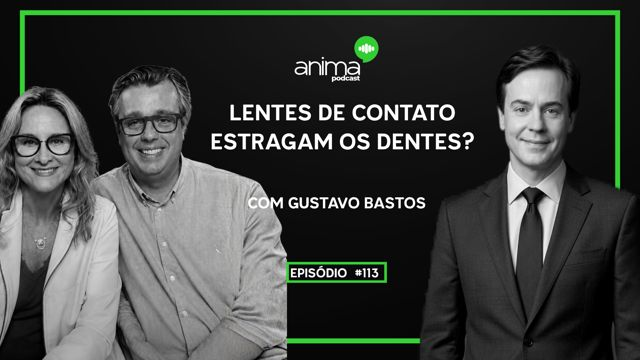
com Gustavo Bastos
topo 137 · cabeça 324 · rosto x1610 · chega à base: sim
com Patrícia Arias
topo 133 · cabeça 286 · rosto x1567 · chega à base: sim
com Diego Falcão
topo 178 · cabeça 435 · rosto x1555 · chega à base: NÃO
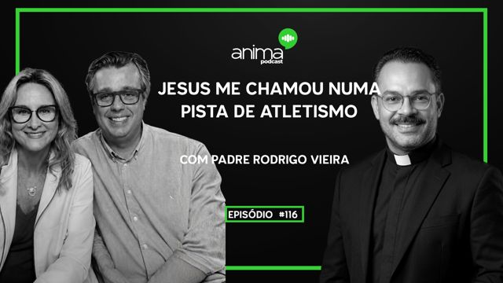
com Padre Rodrigo Vieira
topo 191 · cabeça 371 · rosto x1556 · chega à base: sim
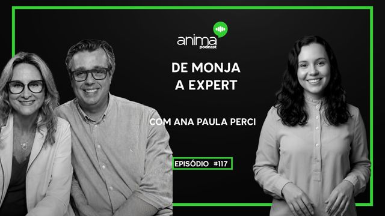
com Ana Paula Perci
topo 178 · cabeça 293 · rosto x1549 · chega à base: sim
com Tânio Tavares
topo 178 · cabeça 210 · rosto x1552 · chega à base: sim
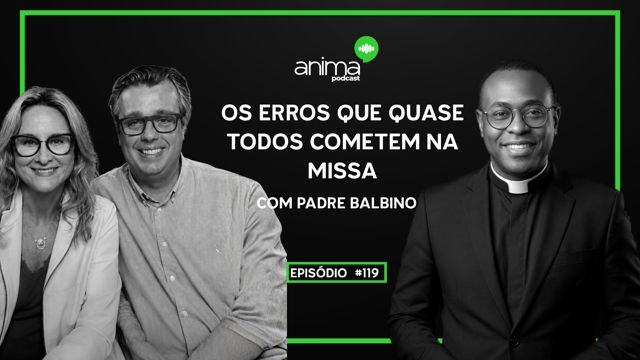
com Padre Balbino
topo 189 · cabeça 329 · rosto x1558 · chega à base: sim
com Eduardo Badu
topo 184 · cabeça 355 · rosto x1554 · chega à base: sim
com Bruna Gutstein
topo 177 · cabeça 296 · rosto x1551 · chega à base: sim
com Padre Balbino
topo 177 · cabeça 443 · rosto x1554 · chega à base: sim
com Rafael Brito
topo 178 · cabeça 340 · rosto x1555 · chega à base: sim
com Chef Marcelo Horta
topo 178 · cabeça 421 · rosto x1555 · chega à base: sim
com Eduardo Oliveira
topo 188 · cabeça 346 · rosto x1554 · chega à base: sim
com Ziza Fernandes
topo 178 · cabeça 384 · rosto x1552 · chega à base: sim
com Valeska Bruzzi
topo 179 · cabeça 328 · rosto x1569 · chega à base: sim
com Padre Balbino
topo 183 · cabeça 350 · rosto x1550 · chega à base: sim
com Padre Balbino
topo 194 · cabeça 315 · rosto x1535 · chega à base: sim
com Guilherme Freire
topo 180 · cabeça 302 · rosto x1554 · chega à base: sim
com Dom Milton Kenan Jr.
topo 176 · cabeça 317 · rosto x1544 · chega à base: sim
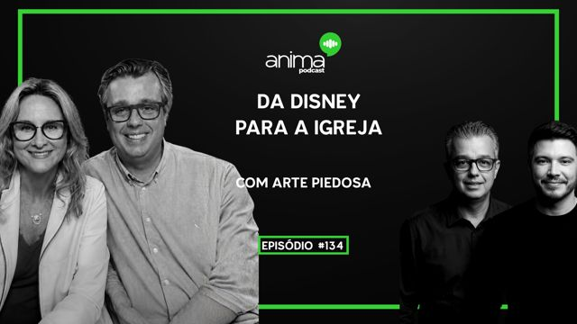
com Arte Piedosa
topo 404 · cabeça 354 · rosto x1663 · chega à base: NÃO
com Rafael Brito
topo 227 · cabeça 329 · rosto x1530 · chega à base: sim
com Padre Balbino
topo 227 · cabeça 329 · rosto x1530 · chega à base: sim
com Araceli Alcântara
topo 181 · cabeça 441 · rosto x1622 · chega à base: sim
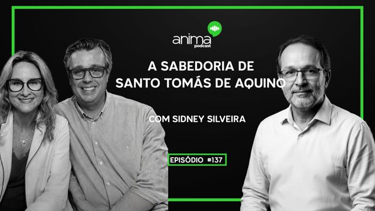
com Sidney Silveira
topo 179 · cabeça 293 · rosto x1557 · chega à base: sim
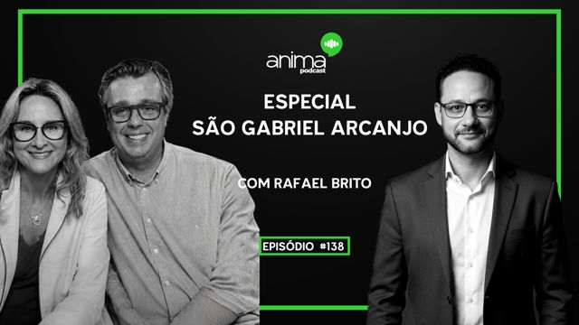
com Rafael Brito
topo 227 · cabeça 329 · rosto x1530 · chega à base: sim
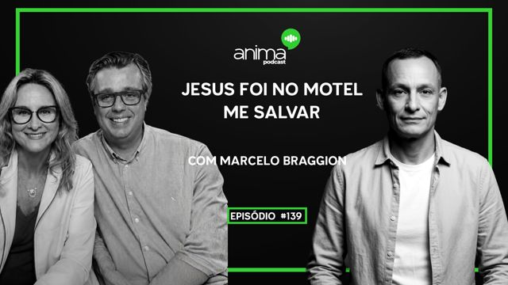
com Marcelo Braggion
topo 184 · cabeça 267 · rosto x1554 · chega à base: sim
com Jessyca Oliveira
topo 178 · cabeça 529 · rosto x1589 · chega à base: sim
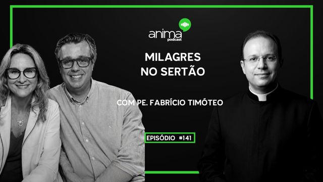
com Pe. Fabrício Timóteo
topo 178 · cabeça 336 · rosto x1544 · chega à base: NÃO
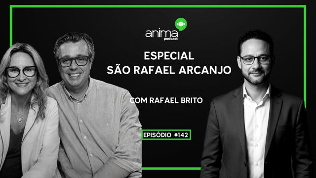
com Rafael Brito
topo 227 · cabeça 329 · rosto x1530 · chega à base: sim
com Ana Manente
topo 200 · cabeça 416 · rosto x1541 · chega à base: sim
com Padre Balbino
topo 194 · cabeça 315 · rosto x1535 · chega à base: sim
com Maria Dulce Arruda
topo 177 · cabeça 295 · rosto x1556 · chega à base: sim
com Pe. André Luiz
topo 177 · cabeça 364 · rosto x1538 · chega à base: NÃO
com Pe. Demétrio Gomes
topo 179 · cabeça 342 · rosto x1554 · chega à base: NÃO
com Ju Gava
topo 181 · cabeça 490 · rosto x1579 · chega à base: sim
com Saulo Barbosa
topo 158 · cabeça 328 · rosto x1575 · chega à base: sim
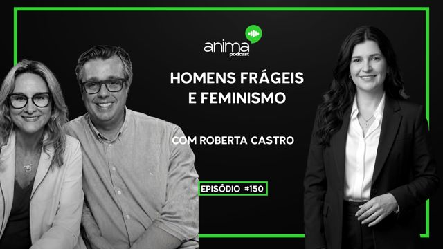
com Roberta Castro
topo 112 · cabeça 334 · rosto x1586 · chega à base: sim
com Rafa e Alex Brasileiro
topo 312 · cabeça 323 · rosto x1671 · chega à base: sim
com Andrea Biselli
topo 177 · cabeça 303 · rosto x1551 · chega à base: sim
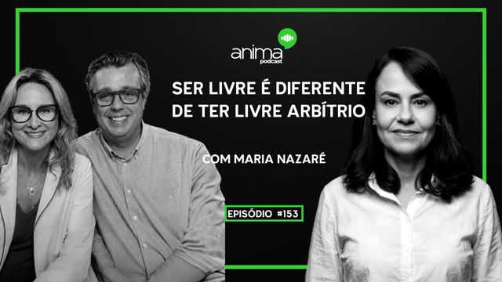
com Maria Nazaré
topo 179 · cabeça 426 · rosto x1558 · chega à base: sim
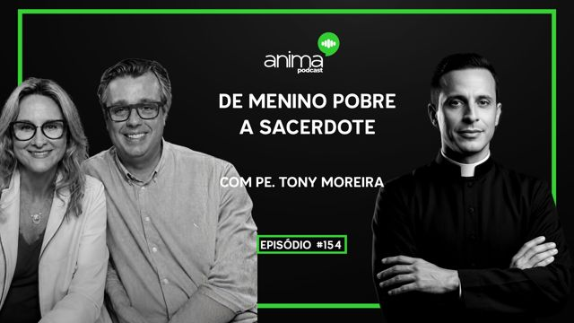
com Pe. Tony Moreira
topo 196 · cabeça 388 · rosto x1555 · chega à base: NÃO
com Aline Brasil
topo 194 · cabeça 313 · rosto x1553 · chega à base: sim
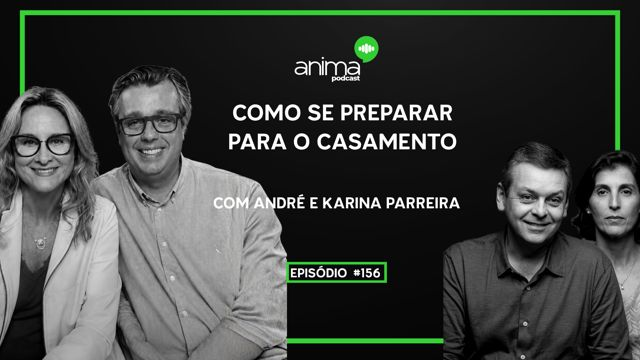
com André e Karina Parreira
topo 426 · cabeça 403 · rosto x1591 · chega à base: sim
com Matheus Machado
topo 197 · cabeça 390 · rosto x1555 · chega à base: sim
com Flávio Andrade
topo 181 · cabeça 345 · rosto x1554 · chega à base: sim
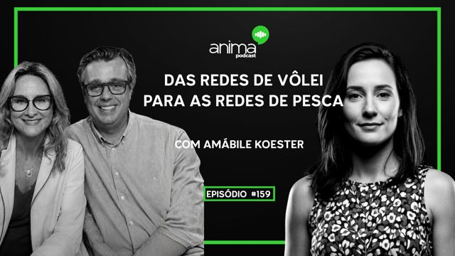
com Amábile Koester
topo 193 · cabeça 416 · rosto x1548 · chega à base: sim
com João Brother
topo 180 · cabeça 361 · rosto x1550 · chega à base: sim
com José Neto
topo 193 · cabeça 356 · rosto x1543 · chega à base: sim
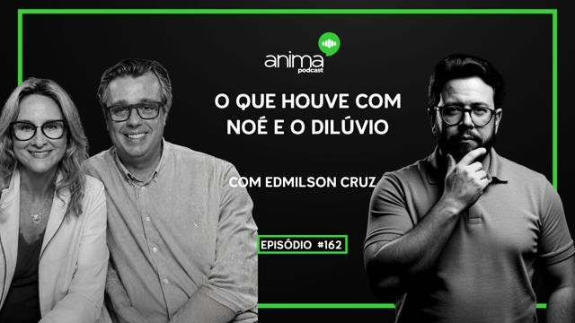
com Edmilson Cruz
topo 193 · cabeça 273 · rosto x1554 · chega à base: sim
com Rafael Brito
topo 227 · cabeça 329 · rosto x1530 · chega à base: sim
com Diogo e Vanessa
topo 198 · cabeça 531 · rosto x1614 · chega à base: sim
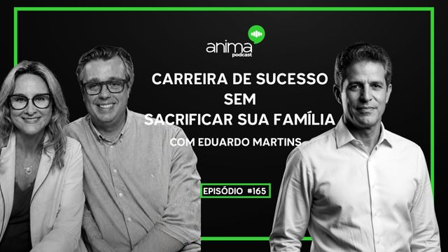
com Eduardo Martins
topo 179 · cabeça 368 · rosto x1368 · chega à base: sim
com Mateus Simon
topo 182 · cabeça 330 · rosto x1552 · chega à base: sim
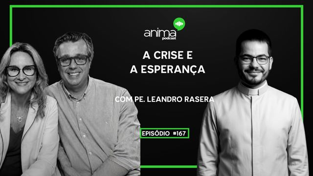
com Pe. Leandro Rasera
topo 242 · cabeça 384 · rosto x1554 · chega à base: sim
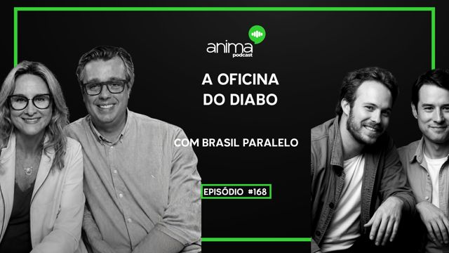
com Brasil Paralelo
topo 285 · cabeça 274 · rosto x1593 · chega à base: sim
com João Cláudio Rufino
topo 230 · cabeça 277 · rosto x1584 · chega à base: sim
com Pe. Leandro Rêgo
topo 178 · cabeça 432 · rosto x1555 · chega à base: sim
com Camila e Felipe Oliveira
topo 333 · cabeça 513 · rosto x1612 · chega à base: sim
com Pe. Evandro Lima
topo 177 · cabeça 330 · rosto x1557 · chega à base: NÃO
com Mariangela Consoli
topo 182 · cabeça 436 · rosto x1557 · chega à base: sim
com Raquel Carpenter
topo 181 · cabeça 193 · rosto x1530 · chega à base: sim
com Ronaldo Amorim
topo 209 · cabeça 327 · rosto x1370 · chega à base: sim
com Roberto Mallet
topo 176 · cabeça 261 · rosto x1553 · chega à base: sim
com Magna Rocha
topo 185 · cabeça 395 · rosto x1566 · chega à base: sim
com Irmã Zélia
topo 178 · cabeça 395 · rosto x1546 · chega à base: sim
com Rodrigo Astolfi
topo 134 · cabeça 344 · rosto x1567 · chega à base: sim
com Rafael Brito
topo 200 · cabeça 318 · rosto x1554 · chega à base: sim
com Pe. Antônio Maria
topo 178 · cabeça 369 · rosto x1551 · chega à base: NÃO
com Frei Juan Manuel
topo 142 · cabeça 337 · rosto x1567 · chega à base: NÃO
com Wellington Perciliano
topo 136 · cabeça 319 · rosto x1628 · chega à base: sim
com Frei Juan Antônio
topo 138 · cabeça 325 · rosto x1623 · chega à base: NÃO
com Carol Tizziani
topo 144 · cabeça 305 · rosto x1627 · chega à base: sim
com Diego Costa
topo 129 · cabeça 325 · rosto x1570 · chega à base: sim
com Pe. Cabecinhas e Marco Daniel
topo 343 · cabeça 532 · rosto x1603 · chega à base: sim
com Elizabete Possidente
topo 141 · cabeça 301 · rosto x1613 · chega à base: sim
com Ariel Lazari
topo 125 · cabeça 330 · rosto x1608 · chega à base: sim
com Willian Celso
topo 140 · cabeça 302 · rosto x1611 · chega à base: sim
com Elizabeth Pimentel
topo 151 · cabeça 279 · rosto x1628 · chega à base: sim
com Renato Moraes
topo 143 · cabeça 280 · rosto x1597 · chega à base: sim
com Rica Barros
topo 166 · cabeça 395 · rosto x1609 · chega à base: sim
com Diogo Wink
topo 139 · cabeça 375 · rosto x1570 · chega à base: sim
com Monsenhor Sérgio
topo 139 · cabeça 413 · rosto x1623 · chega à base: NÃO
com Angela Abdo
topo 131 · cabeça 362 · rosto x1609 · chega à base: sim
com Breno Faria
topo 179 · cabeça 278 · rosto x1582 · chega à base: sim
com Dom Roberto Lopes
topo 127 · cabeça 364 · rosto x1632 · chega à base: sim
com Vitor Becker
topo 146 · cabeça 338 · rosto x1565 · chega à base: sim
com Renato Villarinho
topo 141 · cabeça 176 · rosto x1588 · chega à base: sim
com Glaucio e Tay Cristelo
topo 101 · cabeça 510 · rosto x1605 · chega à base: NÃO
com Simone Fuzaro
topo 150 · cabeça 244 · rosto x1643 · chega à base: NÃO
com Ramon Palomo
topo 144 · cabeça 324 · rosto x1640 · chega à base: NÃO
com Marcelo Malta
topo 139 · cabeça 337 · rosto x1635 · chega à base: sim
com João Blota
topo 139 · cabeça 284 · rosto x1639 · chega à base: NÃO
com Bel Martins
topo 137 · cabeça 264 · rosto x1605 · chega à base: sim
com Herrison Pontes e Jessica Dias
topo 204 · cabeça 546 · rosto x1608 · chega à base: sim
com Alvaro Siviero
topo 146 · cabeça 297 · rosto x1555 · chega à base: sim
com Kenya Camerotte e Berthaldo Soares
topo 233 · cabeça 492 · rosto x1605 · chega à base: sim
com Pedro Affonseca
topo 137 · cabeça 357 · rosto x1629 · chega à base: sim
com Mari Vabo
topo 187 · cabeça 320 · rosto x1500 · chega à base: sim
com Daniel Buttros
topo 132 · cabeça 354 · rosto x1599 · chega à base: sim
com Alam Carrion
topo 137 · cabeça 512 · rosto x1585 · chega à base: NÃO
com Guilherme Cadoiss
topo 137 · cabeça 276 · rosto x1640 · chega à base: sim
com Luis Enrique Carmelo
topo 137 · cabeça 340 · rosto x1645 · chega à base: sim
com Isa Latuf
topo 137 · cabeça 321 · rosto x1634 · chega à base: sim
com Luciano Bandeira
topo 164 · cabeça 419 · rosto x1588 · chega à base: NÃO
com Diogo Viana
topo 148 · cabeça 330 · rosto x1562 · chega à base: sim
com Danilo Lopes
topo 153 · cabeça 395 · rosto x1622 · chega à base: sim
com Pe. Renato Teixeira
topo 141 · cabeça 383 · rosto x1653 · chega à base: NÃO
com Pe. Alex Nogueira
topo 138 · cabeça 426 · rosto x1601 · chega à base: NÃO
com Ítalo Marsili
topo 137 · cabeça 350 · rosto x1630 · chega à base: sim
com Gabriel Kanner
topo 145 · cabeça 368 · rosto x1595 · chega à base: sim
com Frei Angelo Faitanin
topo 138 · cabeça 357 · rosto x1627 · chega à base: NÃO
com Tony Allysson
topo 183 · cabeça 398 · rosto x1555 · chega à base: sim
com Vera Tostes
topo 137 · cabeça 366 · rosto x1631 · chega à base: sim
com Mahsima Nadim
topo 127 · cabeça 340 · rosto x1614 · chega à base: sim
com Paulo Frade
topo 172 · cabeça 315 · rosto x1616 · chega à base: sim
com Alex Cohen
topo 163 · cabeça 306 · rosto x1607 · chega à base: sim
com Yasmin Fleming
topo 259 · cabeça 309 · rosto x1617 · chega à base: sim
com José Roberto e Maria Carolina
topo 61 · cabeça 320 · rosto x1520 · chega à base: sim
com Thiago Castro
topo 133 · cabeça 324 · rosto x1596 · chega à base: sim
com Martinho Rocha
topo 146 · cabeça 209 · rosto x1580 · chega à base: sim
com Pe. Jefferson Merighetti
topo 122 · cabeça 448 · rosto x1630 · chega à base: NÃO
com Pe. Fabio Vieira
topo 127 · cabeça 465 · rosto x1603 · chega à base: NÃO
com Tallis Gomes
topo 111 · cabeça 382 · rosto x1618 · chega à base: sim
com Raphael Rangel
topo 160 · cabeça 302 · rosto x1593 · chega à base: sim
com Céci Portugal e Filipe Santos
topo 351 · cabeça 521 · rosto x1608 · chega à base: sim
com Kenya e Berthaldo
topo 360 · cabeça 533 · rosto x1623 · chega à base: sim
com Maria Verônica
topo 138 · cabeça 337 · rosto x1620 · chega à base: sim
com Lucas Gelasio
topo 144 · cabeça 344 · rosto x1617 · chega à base: sim
com Matheus Machado
topo 137 · cabeça 346 · rosto x1666 · chega à base: sim
com Cláudio Bomtempo
topo 136 · cabeça 333 · rosto x1563 · chega à base: sim
com Esther Biselli
topo 166 · cabeça 319 · rosto x1605 · chega à base: sim
com Altamir Gomes
topo 117 · cabeça 306 · rosto x1611 · chega à base: sim
com Pe. Francisco Amaral
topo 112 · cabeça 401 · rosto x1622 · chega à base: sim
com Pe. Márcio Almeida
topo 120 · cabeça 340 · rosto x1607 · chega à base: sim
com Junho Chu
topo 132 · cabeça 284 · rosto x1589 · chega à base: sim
com Ione Paiva
topo 147 · cabeça 354 · rosto x1634 · chega à base: sim
com Pedrinho Salomão
topo 112 · cabeça 327 · rosto x1630 · chega à base: sim
com Paloma Bernardi
topo 178 · cabeça 318 · rosto x1551 · chega à base: sim
com Alexandra Bastos
topo 137 · cabeça 353 · rosto x1565 · chega à base: sim
com Pedro Augusto
topo 108 · cabeça 263 · rosto x1595 · chega à base: sim
com Thiago Dutra
topo 142 · cabeça 302 · rosto x1604 · chega à base: sim
com Marcus e Yanna Varandas
topo 306 · cabeça 426 · rosto x1600 · chega à base: sim
com Alvaro Siviero e Sérgio Resende
topo 284 · cabeça 438 · rosto x1599 · chega à base: sim
com Diogo e Vanessa
com Joel Gracioso
topo 145 · cabeça 280 · rosto x1606 · chega à base: sim
com Filipe Santos
topo 122 · cabeça 314 · rosto x1618 · chega à base: sim
com Joyce Pessanha
topo 197 · cabeça 264 · rosto x1597 · chega à base: sim
com Simone Medeiros
topo 139 · cabeça 335 · rosto x1623 · chega à base: sim
com João Fernandes
topo 119 · cabeça 395 · rosto x1601 · chega à base: sim
com João Nara
topo 117 · cabeça 354 · rosto x1596 · chega à base: sim
com Jeisa Tartari
topo 146 · cabeça 358 · rosto x1632 · chega à base: sim
com Guto Azevedo e Zulene Parente
topo 111 · cabeça 543 · rosto x1561 · chega à base: sim
com Pe. Edson Ribeiro
topo 118 · cabeça 423 · rosto x1622 · chega à base: NÃO
com Giovane Gávio
topo 141 · cabeça 284 · rosto x1641 · chega à base: sim
com Jota Borgonhoni
topo 117 · cabeça 325 · rosto x1612 · chega à base: sim
com Tatiana Sampaio e Bruno Cortes
topo 349 · cabeça 319 · rosto x1620 · chega à base: sim
com Rosa Maria e Pe. Alan
topo 377 · cabeça 321 · rosto x1654 · chega à base: sim
com Pe. Adriano Zandoná
topo 110 · cabeça 462 · rosto x1628 · chega à base: sim
com Diácono Leo Dominus
topo 153 · cabeça 337 · rosto x1604 · chega à base: sim
com Maria Maia
topo 152 · cabeça 344 · rosto x1585 · chega à base: sim
com Jayme Monjardim e Suzana Castelo
topo 143 · cabeça 483 · rosto x1558 · chega à base: sim
com Alex e Rafa Brasileiro
topo 326 · cabeça 351 · rosto x1649 · chega à base: sim
com Diácono Nilzo
topo 142 · cabeça 426 · rosto x1643 · chega à base: sim
com Rafael Zucato
topo 166 · cabeça 314 · rosto x1608 · chega à base: sim
com Paula Guimarães
topo 136 · cabeça 301 · rosto x1638 · chega à base: sim
com Frei Leandro Costa
topo 116 · cabeça 304 · rosto x1622 · chega à base: sim
com William Sanfona
topo 86 · cabeça 331 · rosto x1620 · chega à base: sim
com Pe. Paulo Ramalho
topo 119 · cabeça 364 · rosto x1623 · chega à base: sim
com Pe. Iágaro Domingos
topo 104 · cabeça 325 · rosto x1586 · chega à base: sim
com Eugênio Jorge
topo 137 · cabeça 236 · rosto x1608 · chega à base: sim
com Tiago Benetti e Alexandre Machafer
topo 338 · cabeça 402 · rosto x1585 · chega à base: sim
com Ariel Lazari
topo 136 · cabeça 308 · rosto x1592 · chega à base: sim
com Maria Clara e Enrico Misasi
topo 284 · cabeça 557 · rosto x1584 · chega à base: sim
com Kiara Castro
topo 140 · cabeça 338 · rosto x1584 · chega à base: sim
com Alvaro e Daniel
topo 348 · cabeça 541 · rosto x1619 · chega à base: NÃO
com Vivy e Nathan
topo 217 · cabeça 364 · rosto x1553 · chega à base: sim
com Dom Virgílio Antunes
topo 177 · cabeça 402 · rosto x1552 · chega à base: sim
com André Vinícius
topo 153 · cabeça 332 · rosto x1603 · chega à base: sim
com Kakau Silva
topo 177 · cabeça 323 · rosto x1402 · chega à base: sim
com Rafael Medeiros
topo 128 · cabeça 277 · rosto x1631 · chega à base: sim
com Glória Severiano Ribeiro
topo 179 · cabeça 318 · rosto x1548 · chega à base: sim
com Ricardo Benvenhu
topo 180 · cabeça 340 · rosto x1552 · chega à base: sim
com Andyara Nóbrega
topo 180 · cabeça 319 · rosto x1557 · chega à base: sim
com Pe. Francisco Amaral
topo 179 · cabeça 363 · rosto x1546 · chega à base: sim
com Clara e Thomaz Magalhães
topo 426 · cabeça 458 · rosto x1595 · chega à base: sim
com Raiane Batista
topo 184 · cabeça 352 · rosto x1528 · chega à base: sim
com Pe. Pablo Henrique
topo 178 · cabeça 367 · rosto x1555 · chega à base: sim
com Eduarda Campopiano
topo 60 · cabeça 440 · rosto x1660 · chega à base: sim
com Enrico Misasi e Reinaldo Alguz
topo 129 · cabeça 492 · rosto x1584 · chega à base: NÃO
com Felipe Alcântara
topo 60 · cabeça 338 · rosto x1704 · chega à base: NÃO
com Pe. Christian Mendoza
topo 166 · cabeça 486 · rosto x1661 · chega à base: sim
com Sabrina e Steven J. Gunnell
topo 158 · cabeça 514 · rosto x1539 · chega à base: NÃO
com João Malheiro
topo 60 · cabeça 350 · rosto x1484 · chega à base: NÃO
com Juan Fernando Sellés
topo 60 · cabeça 340 · rosto x1559 · chega à base: NÃO
com Júlia de Castro
topo 60 · cabeça 414 · rosto x1558 · chega à base: NÃO
com Martha Rocha
topo 60 · cabeça 497 · rosto x1674 · chega à base: sim
com Pe. Cássio
topo 86 · cabeça 321 · rosto x1657 · chega à base: NÃO